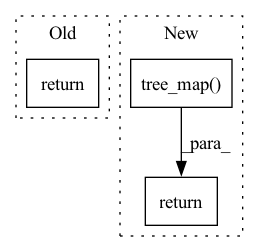

Pattern ID :39287
Before Change
return lax.cond(pred, true_fun, false_fun, operand)
index = jnp.all(unvmap_pred).astype(int) + jnp.any(unvmap_pred)
return lax.switch(index, [false_fun, _cond, true_fun], operand)
After Change
true_vals = lax.cond(_unvmap_any, true_fun, lambda _: true_dummy, operand)
false_vals = lax.cond(_unvmap_all, lambda _: false_dummy, false_fun, operand)
keep = lambda a, b: jnp.where(pred, a, b)
return jax.tree_map( keep, true_vals, false_vals)
def maybe(pred, fun, operand):
Possibly executes an automorphic function.In pattern: SUPERPATTERN
Frequency: 3
Non-data size: 3
Instances Fragment ID: 111521989
Project Name: patrick-kidger/diffrax
Commit Name: 99105a607c66a600baee3d2519dbc63eee6ea5b5
Time: 2021-10-12
Author: 33688385+patrick-kidger@users.noreply.github.com
File Name: diffrax/misc/cond.py
M Class Name: AnonimousClass
N Class Name: AnonimousClass
M Method Name: cond(4)
N Method Name: cond(4)
M Parent Class:
N Parent Class:
M File Name: diffrax/misc/cond.py
N File Name: diffrax/misc/cond.py
M Start Line: 15
M End Line: 26
N Start Line: 32
N End Line: 44
Before Change
return tuple(term.contr(t0, t1) for term in self.terms)
def prod(self, vf: Tuple[PyTree, ...], control: Tuple[PyTree, ...]) -> PyTree:
return sum(
term.prod(vf_, control_)
for term, vf_, control_ in zip(self.terms, vf, control)
)After Change
term.prod(vf_, control_)
for term, vf_, control_ in zip(self.terms, vf, control)
]
return jax.tree_map( _sum, *out)
func_for_init = vf
Fragment ID: 111521991
Project Name: patrick-kidger/diffrax
Commit Name: d784bc5bd1e63190861e6d1b81a170343fe073b9
Time: 2021-09-17
Author: 33688385+patrick-kidger@users.noreply.github.com
File Name: diffrax/term.py
M Class Name: MultiTerm
N Class Name: MultiTerm
M Method Name: prod(3)
N Method Name: prod(3)
M Parent Class: AbstractTerm
N Parent Class: AbstractTerm
M File Name: diffrax/term.py
N File Name: diffrax/term.py
M Start Line: 102
M End Line: 105
N Start Line: 106
N End Line: 110
Before Change
flat_out = [merge_fn(values) for values in zip(*flats)]
module = jax.tree_unflatten(treedefs[0], flat_out)
return module
def train(self: T, mode=True):
Rebuild a new model recursively and set `self._training = mode`.After Change
return module
def update(self: T, other: T) -> T:
return jax.tree_map( lambda s, o: (s if o is None else o), self, other)
def train(self: T, mode=True):
Rebuild a new model recursively and set `self._training = mode`.
submods, treedef = jax.tree_flatten( Fragment ID: 111521992
Project Name: ntt123/pax
Commit Name: 57dbb8d3eb54b94d411a5da1378607de03639227
Time: 2021-08-29
Author: 9960521+NTT123@users.noreply.github.com
File Name: pax/module.py
M Class Name: Module
N Class Name: Module
M Method Name: update(2)
N Method Name: update(2)
M Parent Class:
N Parent Class:
M File Name: pax/module.py
N File Name: pax/module.py
M Start Line: 115
M End Line: 134
N Start Line: 156
N End Line: 156